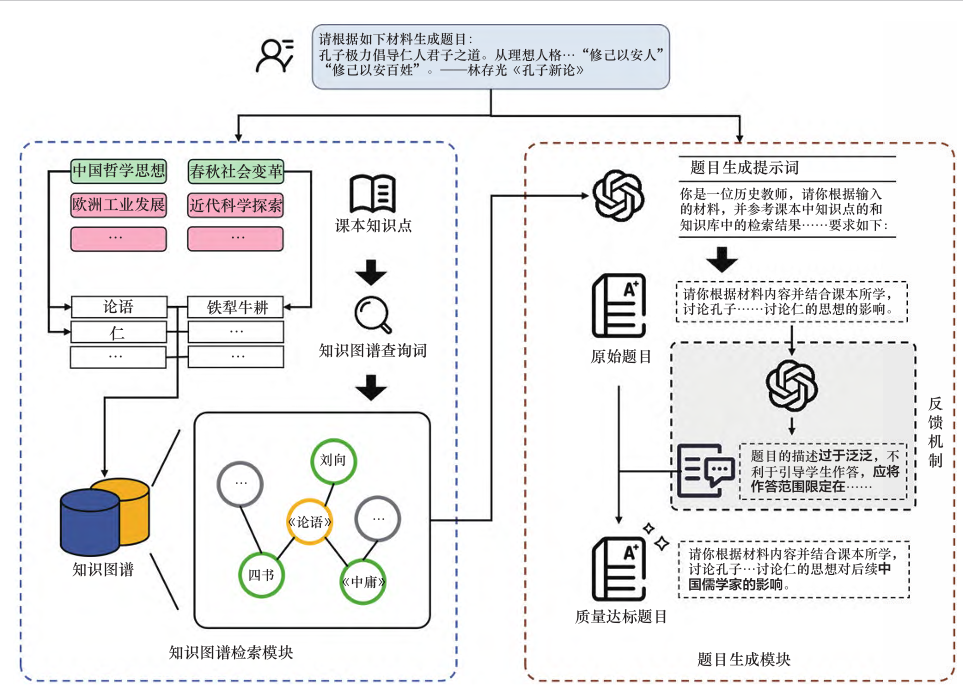
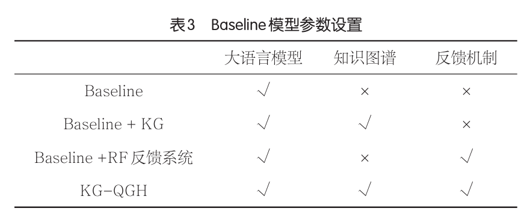
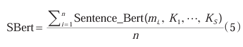
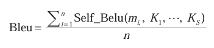
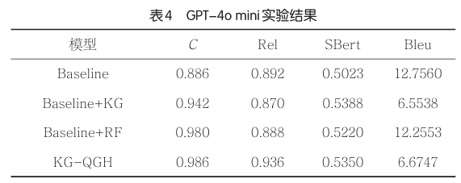
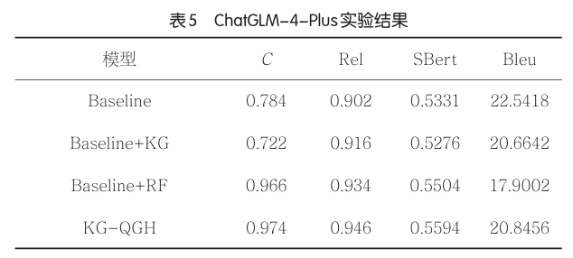
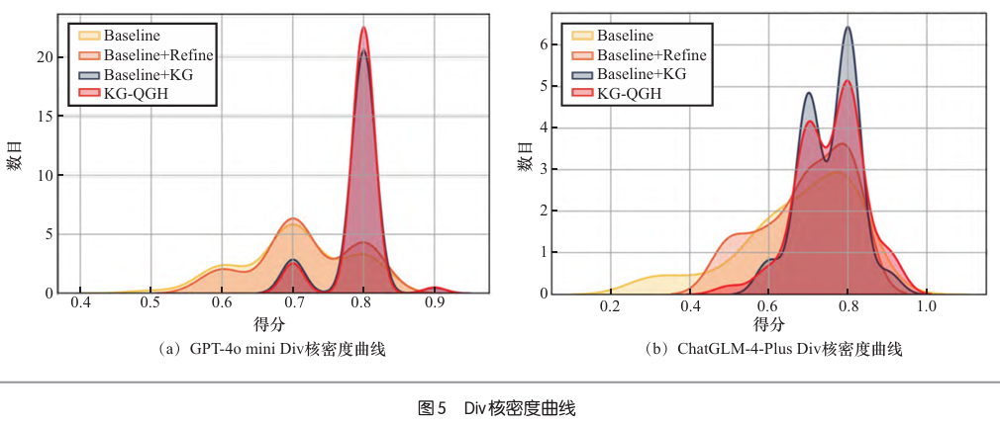

知识增强，llm，试题生成系统
可参考：
知识图谱引入试题生成的具体方法
完善的试题评估体系和方法，结合llm评估而非问卷
特点
输入材料进行出题，而不是结合学生知识掌握情况生成简答题，不是客观题；
生成只依据知识图谱的实体，不考虑属性、关系，相当于生成的试题与知识库的关系仅仅是知识点，不依赖知识库中的其他内容。
只生成题干，不生成解析答案；
算例：
Python输入材料：科技革命使世界发生广泛而深 刻的变化，一些国家……对应课程知识点：[‘近代科学的发展’, ‘世界经济的全球化趋势’]KG检索结果：[‘国家资本主义’, ‘大萧条’]（最好还有其属性、关系）分析过程：选取的关键词是“国家资本 主义”。关键词与材料的联系在于，德 国在19世纪晚期的工业化进程中，政府 积极支持技术发展和资金投入，体现了 国家资本主义的特征。这种通过国家干 预市场促进经济和工业发展的模式，使 德国能够迅速崛起并超越其他国家。国 家对经济的直接参与和对科技的重视是 德国能够实现跨越式发展的核心原因。生成题目：结合19世纪末德国的工业发展 背景，分析国家资本主义对德国经济、科 技进步的作用，并与其他国家的工业化进 程进行比较，指出各自的异同之处。反馈系统评价：该题目质量较高
模型架构
知识图谱检索模块
试题生成模块
输入：材料序列Tn; 原始提示词
输出：对每一个材料Ti，生成一道简答题Qi
材料->提示词->识别课程知识点->生成查询词->在KG上检索->检索结果(实体及其属性、关系)->融合提示词->试题生成->优化->试题

知识图谱构建 略
知识图谱检索模块
1)输入材料Ti->从知识点集合{K}中找到知识点Ki->联想相关的检索词，作为最终检索词。这是因为知识点之间有语义相似度，只用一个字面知识点作为检索词可能不够全面、影响试题多样性。
2)检索词->检索结果{kw_ij}。
题目生成模块
1)生成：Qi=LLM(Ti,Ki,{kw_ij})
prompt:
Python你是一位历史教师，请你根据输入的 材料，并参考课本中的知识点和知识库中的检索结果生成一道历史简答题，要求如下： 1. 试题应该考查学生能否分析历史事 物人物之间的联系，而不是单纯的考查背诵能力 2. 请从知识库图谱的检索结果中选取 与输入材料相关的关键词作为参考来设计问题 输入的材料为：{material} 待筛选的关键词有:{keywords} 请按如下格式输出 [EXPLAIN]选取的关键词，关键词与材料的联系[EXPLAIN] [START]试题[END]
2)检验，反馈机制：Q'i=RF(Qi,Ti,Ki,{kw_ij})
RF prompt：
Python你是一名历史老师，请你对输入的历史试题质量进行检查，如果质量不达标请根据参考资料对题目进行修改，如果质量 达标则直接进行输出### 参考资料教材的知识点包括：{knowledges} 知识图谱中的关键词包括：{KGResult}### 输入的试题 {question} ### 请按如下格式输出[EXPLAIN]对试题质量的分析，如质 量不达标则说明质量不达标的原因 [EXPLAIN][START]输出的试题[END]
实验
数据：真题中的材料文本；历史教材知识点
模型：

评估指标：
正确性：同时通过以下四个检查标准，记为正确/错误。
是否为一个问题；是否有知识错误；是否明确；是否考察了学生能力
正确性得分C=正确试题/n
相关性：题目是否符合知识点
知识点匹配度：用llm判断。得分rel=n_true/n
知识点相似度：用sentence bert模型计算试题Qi与输入的材料文本Ti的相似度。得分sbert=sum(相似度)/n。K:所有知识点

多样性：对同一情况下，多次生成的题目是否过于重复
llm多样性打分：对同一材料Ti，多次生成的题干若相似度达标，判断为相似。得分div=相似数/n
文本多样性得分：用self Bleu模型计算文本的丰富度。K:所有知识点。（越低越好）

结果
正确性最好。相关性最好（特别是rel指标）。Bleu多样性一般。Div多样性在gpt4o-mini最好。


核密度图（样本分布）。
